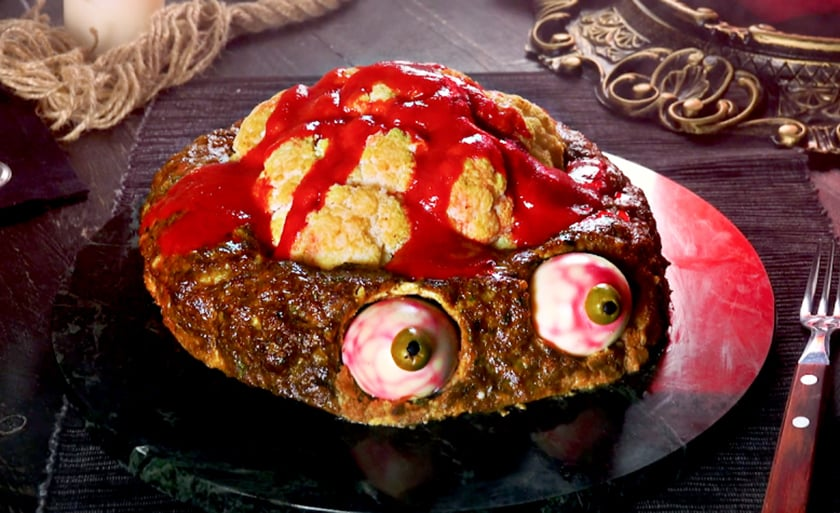

CÉREBRO PROFANADO: O BANQUETE DOS ZUMBIS

>
Introdução Macabra
Prepare-se para o prato mais nojento e delicioso que já serviu. Este feitiço transforma uma simples couve-flor em uma carcaça cerebral, pronta para a devoração na noite de Halloween!
I. O Ritual da Purificação (Preparo do Cérebro)
Ingredientes (A Carcaça e a Unção):
- 1 Couve-flor grande e intacta (O Cérebro)
- Azeite de Oliva (Óleo Profano)
- Sal e Pimenta (Sementes de Maldição)
- Páprica Defumada (Pó do Submundo)
O Rito (Passo a Passo):
- Retire as folhas e lave o Cérebro, mas mantenha-o inteiro.
- Misture o Óleo Profano, as Sementes e o Pó. Pincele por toda a carcaça.
- Leve-o ao Forno (Portão do Inferno) a 200°C por 30 a 40 minutos.
II. A Colheita de Sangue (Molho)
Componentes da Seiva Vital:
- 1 Beterraba cozida (O Coração Pulsante)
- Maionese ou Iogurte (Secreção Cerebral)
- Vinagre de Vinho Tinto (Gota de Fermento Sanguíneo)
O Sangramento:
- Lance todos os ingredientes no Processador (Máquina de Tortura) e bata.
- Ajuste as Lágrimas Salgadas (sal) a gosto.
- Resfrie o sangue até a hora do Banquete.
III. As Penas do Corvo (A Decoração Maligna)
Utilize as Plumas Negras:
- Sementes de Gergelim Preto
O Toque Final:
- Em uma frigideira, toste levemente o Gergelim Preto por 1-2 minutos.
IV. O Banquete Final (Montagem)
- Posicione o Cérebro Profanado no centro do prato.
- Despeje o Molho de Sangue Fresco (Beterraba) por cima, deixando escorrer.
- Polvilhe as Plumas Negras (Gergelim) por toda a superfície.
Sirva enquanto os ecos dos gritos ainda ecoam na cozinha.
>